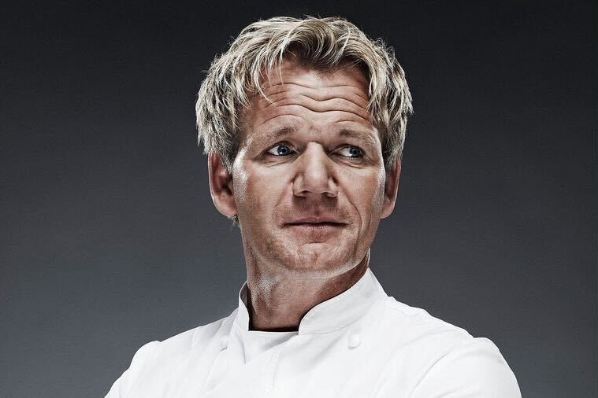
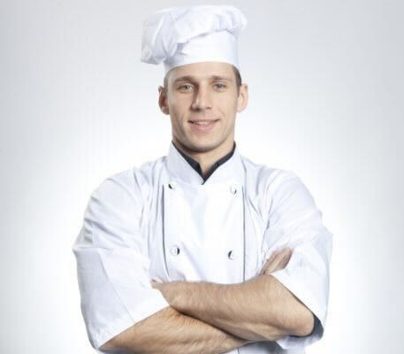

Le restaurant London est le restaurant gastronomique Great II de Londres pour les touristes sur la Tamise. Nous proposons un menu dégustation de saison de notre chef cuisinier britannique, avec des plats modernes et élégants ancrés dans la technique mais dépouillés de l'essentiel. L'accent est mis sur l'approvisionnement des meilleurs ingrédients que les îles britanniques ont à offrir, avec des plats inspirés par des chefs cuisiniers formés à l'étranger et d'autres cultures alimentaires.
ABOUT US

Steayen Mewire
Après une formation dans un hôtel en Angleterre, il enseigne la cuisine dans une université. 15 ans de formation dans divers restaurants britanniques En 1979, alors qu'il est grand chef du restaurant britannique « Brighton Pierre », il obtient une étoile Michelin. De retour à Edmont, il devient le chef général dont le chef exécutif du restaurant britannique « For Grain ». En 2008, il a été chef exécutif du Hokkaido Toyako Summit.
Kaoru Kurosawa
L'un des pâtissiers les plus reconnus au monde après avoir acquis de l'expérience dans de nombreux restaurants célèbres au Japon A rejoint le Tokyo Station Hotel en 2002 et a déménagé à l'Hôtel Metropolitan Edmont en 2006. A remporté deux couronnes de "Grand Prix" et "Best Technology Award" lors du "1er Trophée de Cournonski Japon" qui s'est tenu en août 2013.

Kadium Chritine
Après avoir rejoint l'Hôtel Metropolitan en 1990, il étudie sous Tierry au restaurant français "For Grain". En 2004, il est devenu chef cuisinier de l'Hotel Metropolitan London Dining & Bar TENQOO. Après cela, à partir de 2016, il a été le premier chef exécutif du train de croisière "TRAIN SUITE London". En juillet 2017, il est devenu le chef exécutif de l'hôtel Metropolitan Black Widow, où il continue à ce jour.